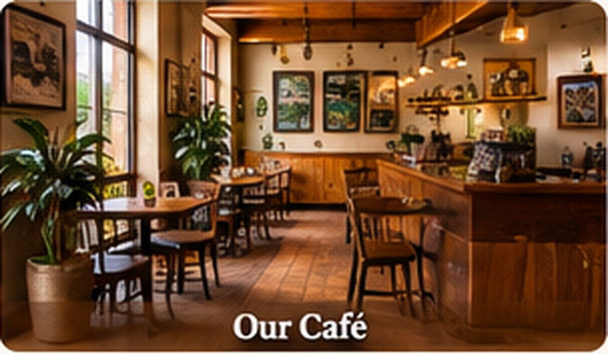

Our Story
Savanna Brew Café is a friendly place for coffee lovers, friends, students and everyone who enjoys a calm, welcoming atmosphere. We celebrate the flavour of locally sourced Kenyan coffee and serve it with care.
Whether you are stopping by for your morning coffee, meeting a friend or taking a quiet break, there is always a place for you at our table.
See our menu